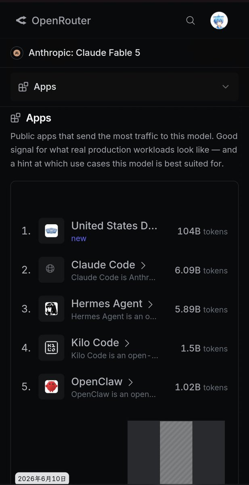

@claudeai ok，so why？



Anthropic藏了一个月的神话模型首秀
连美国战争部都要偷着来试试！
继昨天有人发现美国战争部（国防部）正在通过Openroute 使用 Claude Fable 5 并出现在了排行榜上，消耗104b tokens，价值数百万美元，远超其他应用，之后
今天发现其名字已被官方隐藏，看来并不是故意公开的。 https://t.co/kv4BExZrmz
连美国战争部都要偷着来试试！
继昨天有人发现美国战争部（国防部）正在通过Openroute 使用 Claude Fable 5 并出现在了排行榜上，消耗104b tokens，价值数百万美元，远超其他应用，之后
今天发现其名字已被官方隐藏，看来并不是故意公开的。 https://t.co/kv4BExZrmz
Introducing Claude Fable 5: a Mythos-class model that we’ve made safe for general use.
Its capabilities exceed those of any model we’ve ever made generally available. https://t.co/2AvmEjHIX8
Its capabilities exceed those of any model we’ve ever made generally available. https://t.co/2AvmEjHIX8